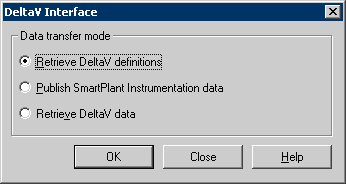

SPI: set up SmartPlant software
In addition to installing the add-ins and the Intergraph components there are other setup tasks to perform:
- The administrator may choose to add rules to SPI to make it more useful for DeltaV configuration.
- The administrator must choose a tag convention that is compatible with DeltaV software and make the tag conventions for instruments, fieldbus devices, and control system tags (CSTs) and so on conform to it.
-
Create a new user environment variable:
EFCommonFileMode=1
To create the variable, open System Properties from the Control Panel, open the Advanced tab and click Environment Variables. In the Environment Variables dialog, click the New button under the User variables pane, and then enter the variable name and value.
-
There are two additions the administrator must make to the INtools.ini file (located in \Program Files\SmartPlant\Instrumentation):
The administrator must choose a tag separator for SPI to parse instrument tags on. For example, "-", "_", or "$." In the [API] section of the INtools.INI file add the following line:
NameSpacesReplacement=$
In the [database] section of the INtools.ini file, add the following line:
LOCK=RC
-
In SPI select Tools > Interfaces > DeltaV to open the DeltaV Interfaces dialog. Select Retrieve DeltaV definitions as shown below. Then click OK and browse to the definitions source path. Then click OK again.
Note:
It is recommended to retrieve the fieldbus definitions first, then retrieve the HART definitions.
The files should retrieve successfully. Note that this process is additive. Old definitions are not deleted automatically, because they may be in use. However, if you publish objects with obsolete definitions for the target DeltaV system, then Retrieve into DeltaV will have errors.

- DeltaV provides an Enumerations file, SPIDefinitional.enum.xml, loaded into the SPI database to populate the custom enumerations required to interface with DeltaV. See the SPI help topic Synchronize an Enumerated List.
- When publishing from DeltaV and before retrieving into SPI it is recommended that the Administrator sets up a Device Type Profile for each combination of Device and Tag Mnemonic that has been used in fieldbus. For example, FE and Flow Transmitter xxxx.
-
Add DeltaV Default Instrument Manufacturer and Model types to the list of SPI Instrument Types.
To add manufacturers, select Index > Tables > Instrument Manufacturers, and then add the new manufacturer.
To add model types, select Index > Tables > Instrument Models, and then select the default manufacturer and add new model data.
To add instrument types, select Index > Tables > Instrument Types, and then select Process Function and add the new instrument type.
For more information see the topic DeltaV Default Instrument Manufacturer and Model.